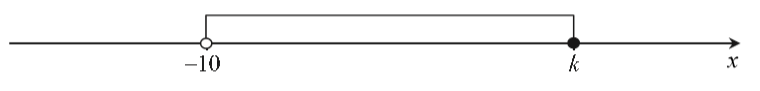
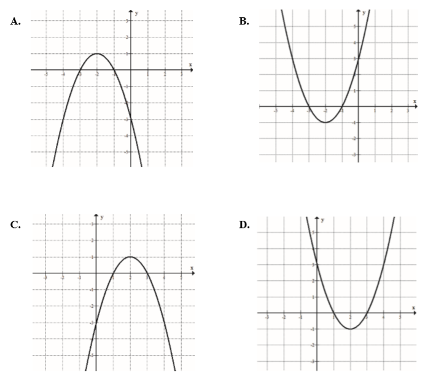
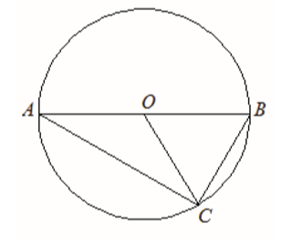
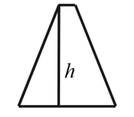
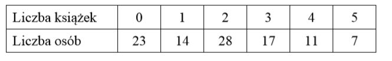
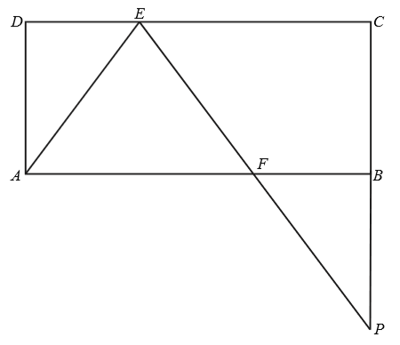

Matura 2018 czerwiec
Dla \(x=\frac{2}{\sqrt{2}}+1\) oraz \(y=\sqrt{2}-1\) wartość wyrażenia
\(x^2-2xy+y^2\) jest równa
A.\( 4 \)
B.\( 1 \)
C.\( \sqrt{2} \)
D.\( \frac{1}{\sqrt{2}} \)
A
Dane są liczby: \(a=\log_{\frac{1}{2}}8\), \(b=\log_48\), \(c=\log_4\frac{1}{2}\).
Liczby te spełniają warunek
A.\( a\gt b\gt c \)
B.\( b\gt a\gt c \)
C.\( c\gt b\gt a \)
D.\( b\gt c\gt a \)
D
Wskaż liczbę spełniającą nierówność \((4-x)(x+3)(x+4)\gt 0\).
A.\( 5 \)
B.\( 16 \)
C.\( -4 \)
D.\( -2 \)
D
Po dwukrotnej obniżce, za każdym razem o \(10\%\) w stosunku do ceny obowiązującej
w chwili obniżki, komputer kosztuje \(1944\) złote. Stąd wynika, że przed tymi obniżkami ten
komputer kosztował
A.\( 2200 \) złotych
B.\( 2300 \) złotych
C.\( 2400 \) złotych
D.\( 3000 \) złotych
C
Na rysunku przedstawiony jest przedział \((-10,k\rangle \), gdzie k jest liczbą
całkowitą. Suma wszystkich liczb całkowitych należących do tego przedziału jest równa \(21\).  Stąd wynika, że
A.\( k=9 \)
B.\( k=11 \)
C.\( k=21 \)
D.\( k=31 \)
B
Równanie \(x-\frac{1}{2x+1}=0\)
A.ma dokładnie dwa rozwiązania rzeczywiste.
B.ma dokładnie trzy rozwiązania rzeczywiste.
C.ma dokładnie jedno rozwiązanie rzeczywiste.
D.nie ma rozwiązań.
A
Liczbę \(\frac{224}{1111}\) można zapisać w postaci nieskończonego ułamka
dziesiętnego okresowego. Dwudziestą cyfrą po przecinku jego rozwinięcia jest
A.\( 2 \)
B.\( 0 \)
C.\( 1 \)
D.\( 6 \)
D
Liczba \(\frac{8^{20}-2\cdot 4^{20}}{2^{20}\cdot 4^{10}}\) jest równa
A.\( 0 \)
B.\( 2^{20}-2 \)
C.\( 2^{19} \)
D.\( 4-2^{10} \)
B
Funkcja \(f\) jest określona wzorem \(f(x)=-2(x+2)^{-1}(x-3)^2\) dla każdej liczby
rzeczywistej \(x\ne -2\). Wartość funkcji \(f\) dla argumentu \(2\) jest równa
A.\( -8 \)
B.\( -\frac{1}{2} \)
C.\( \frac{1}{2} \)
D.\( 8 \)
B
Największą wartością funkcji \(y=-(x-2)^2+4\) w przedziale \(\langle 3,5\rangle \)
jest
A.\( 4 \)
B.\( 3 \)
C.\( 0 \)
D.\( 5 \)
B
Funkcja liniowa \(f(x)=(1-m^2)x+m-1\) nie ma miejsc zerowych dla
A.\( m=1 \)
B.\( m=0 \)
C.\( m=-1 \)
D.\( m=-2 \)
Na jednym z rysunków przedstawiono fragment wykresu funkcji kwadratowej określonej
wzorem \(f(x)=-(x-1)(3-x)\). Wskaż ten rysunek. 
Wszystkie wyrazy ciągu geometrycznego \((a_n)\) określonego dla \(n\ge1\) są
dodatnie i \(3a_2=2a_3\). Stąd wynika, że iloraz \(q\) tego ciągu jest równy
A.\( q=\frac{2}{3} \)
B.\( q=\frac{3}{2} \)
C.\( q=6 \)
D.\( q=5 \)
B
Dany jest ciąg arytmetyczny \((a_n)\) określony wzorem \(a_n=16-\frac{1}{2}\cdot
n\) dla każdej liczby całkowitej \(n\ge 1\). Różnica \(r\) tego ciągu jest równa
A.\( r=-16 \)
B.\( r=-\frac{1}{2} \)
C.\( r=-\frac{1}{32} \)
D.\( r=15\frac{1}{2} \)
B
Liczba \(1-\operatorname{tg} 40^\circ \) jest
A.ujemna.
B.dodatnia, ale mniejsza od \( 0{,}1 \)
C.większa od \( 0{,}1 \), ale mniejsza od \(0{,}5\)
D.większa od \(0{,}5\)
C
Odcinek \(AB\) jest średnicą okręgu o środku \(O\) i promieniu \(r\). Na tym okręgu
wybrano punkt \(C\), taki, że \(|OB|=|BC|\) (zobacz rysunek).  Pole trójkąta \(AOC\) jest równe
A.\( \frac{1}{2}r^2 \)
B.\( \frac{1}{4}r^2 \)
C.\( \frac{\pi}{4}r^2 \)
D.\( \frac{\sqrt{3}}{4}r^2 \)
D
Okrąg o środku \(S_1=(2,1)\) i promieniu \(r\) oraz okrąg o środku \(S_2=(5,5)\) i
promieniu \(4\) są styczne zewnętrznie. Wtedy
A.\( r=1 \)
B.\( r=2 \)
C.\( r=3 \)
D.\( r=4 \)
A
Długości boków trapezu równoramiennego są równe \(12, 13, 2, 13\).  Wysokość \(h\) tego trapezu jest
równa
A.\( 5 \)
B.\( 8 \)
C.\( 10 \)
D.\( 12 \)
D
Miary kątów pewnego czworokąta pozostają w stosunku \(4:3:3:2\). Wynika stąd, że
najmniejszy kąt tego czworokąta ma miarę
A.\( 60^\circ \)
B.\( 50^\circ \)
C.\( 40^\circ \)
D.\( 30^\circ \)
A
Dany jest walec, w którym wysokość jest równa promieniowi podstawy. Objętość tego
walca jest równa \(27\pi\). Wynika stąd, że promień podstawy tego walca jest równy
A.\( 9 \)
B.\( 6 \)
C.\( 3 \)
D.\( 2 \)
C
Stożek o promieniu podstawy \(r\) i kula o tym samym promieniu mają równe
objętości. Tangens kąta między tworzącą i płaszczyzną podstawy tego stożka jest równy
A.\( \frac{4}{3} \)
B.\( 12 \)
C.\( \sqrt{17} \)
D.\( 4 \)
D
Wśród \(100\) osób przeprowadzono ankietę, w której zadano pytanie o liczbę książek
przeczytanych w ostatnim roku. Wyniki ankiety zebrano w poniższej tabeli.  Średnia liczba przeczytanych
książek przez jedną ankietowaną osobę jest równa
A.\( 0{,}5 \)
B.\( 1 \)
C.\( 2 \)
D.\( 2{,}5 \)
C
Gdy dodamy liczbę wszystkich krawędzi pewnego graniastosłupa do liczby wszystkich
jego wierzchołków, to otrzymamy w wyniku \(15\). Liczba wszystkich krawędzi tego graniastosłupa jest
równa
A.\( 9 \)
B.\( 7 \)
C.\( 6 \)
D.\( 5 \)
A
Liczba wszystkich dodatnich liczb czterocyfrowych parzystych, w których zapisie nie
występują cyfry \(0\) i \(2\), jest równa
A.\( 8\cdot 8\cdot 8\cdot 3 \)
B.\( 8\cdot 7\cdot 6\cdot 3 \)
C.\( 8\cdot 10\cdot 10\cdot 4 \)
D.\( 9\cdot 8\cdot 7\cdot 4 \)
A
W pudełku znajdują się dwie kule: czarna i biała. Czterokrotnie losujemy ze
zwracaniem jedną kulę z tego pudełka. Prawdopodobieństwo zdarzenia polegającego na tym, że dokładnie
trzy razy w czterech losowaniach wyciągniemy kulę koloru białego, jest równe
A.\( \frac{1}{16} \)
B.\( \frac{3}{8} \)
C.\( \frac{1}{4} \)
D.\( \frac{3}{4} \)
C
Rozwiąż nierówność \(2x(1-x)+1-x\lt 0\).
Wykresem funkcji kwadratowej \(f\) określonej wzorem \(f(x)=x^2+bx+c\) jest
parabola, na której leży punkt \(A=(0,-5)\). Osią symetrii tej paraboli jest prosta o równaniu
\(x=7\). Oblicz wartości współczynników \(b\) i \(c\).
\(b=-14\), \(c=-5\)
Wykaż, że reszta z dzielenia sumy kwadratów czterech kolejnych liczb naturalnych
przez \(8\) jest równa \(6\).
Dany jest prostokąt \(ABCD\). Na boku \(CD\) tego prostokąta wybrano taki punkt
\(E\), że \(|EC|=2|DE|\), a na boku \(AB\) wybrano taki punkt \(F\), że \(|BF|=|DE|\). Niech \(P\)
oznacza punkt przecięcia prostej \(EF\) z prostą \(BC\) (zobacz rysunek). Wykaż, że trójkąty \(AED\)
i \(FPB\) są przystające. 
Kąt \(\alpha \) jest ostry i \(\sin \alpha +\cos \alpha =\sqrt{2}\). Oblicz wartość
wyrażenia \(\operatorname{tg} \alpha +\frac{1}{\operatorname{tg} \alpha }\).
\(2\)
Rzucamy cztery razy symetryczną monetą. Po przeprowadzonym doświadczeniu zapisujemy
liczbę uzyskanych orłów (od \(0\) do \(4\)) i liczbę uzyskanych reszek (również od \(0\) do \(4\)).
Oblicz prawdopodobieństwo zdarzenia polegającego na tym, że w tych czterech rzutach liczba
uzyskanych orłów będzie większa niż liczba uzyskanych reszek.
\(\frac{5}{16}\)
Dany jest ostrosłup prawidłowy czworokątny o wysokości \(H=16\). Cosinus kąta
nachylenia krawędzi bocznej do płaszczyzny podstawy tego ostrosłupa jest równy \(\frac{3}{5}\).
Oblicz pole powierzchni bocznej tego ostrosłupa.
W ciągu arytmetycznym \((a_n)\), określonym dla liczb naturalnych \(n\ge1\), wyraz
szósty jest liczbą dwa razy większą od wyrazu piątego, a suma dziesięciu początkowych wyrazów tego
ciągu jest równa \(S_{10}=\frac{15}{4}\). Oblicz wyraz pierwszy oraz różnicę tego ciągu.
\(a_1=-\frac{3}{4}\), \(r=\frac{1}{4}\)
Punkty \(A=(-1,1)\) i \(C=(1,9)\) są wierzchołkami trójkąta równoramiennego
\(ABC\), w którym \(|AC|=|BC|\). Podstawa \(AB\) tego trójkąta zawiera się w prostej o równaniu
\(y=\frac{1}{2}x+\frac{3}{2}\). Oblicz współrzędne wierzchołka \(B\) tego trójkąta.
\(B=\left(\frac{43}{5},\frac{29}{5}\right)\)